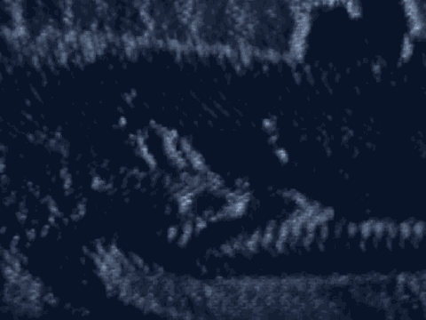
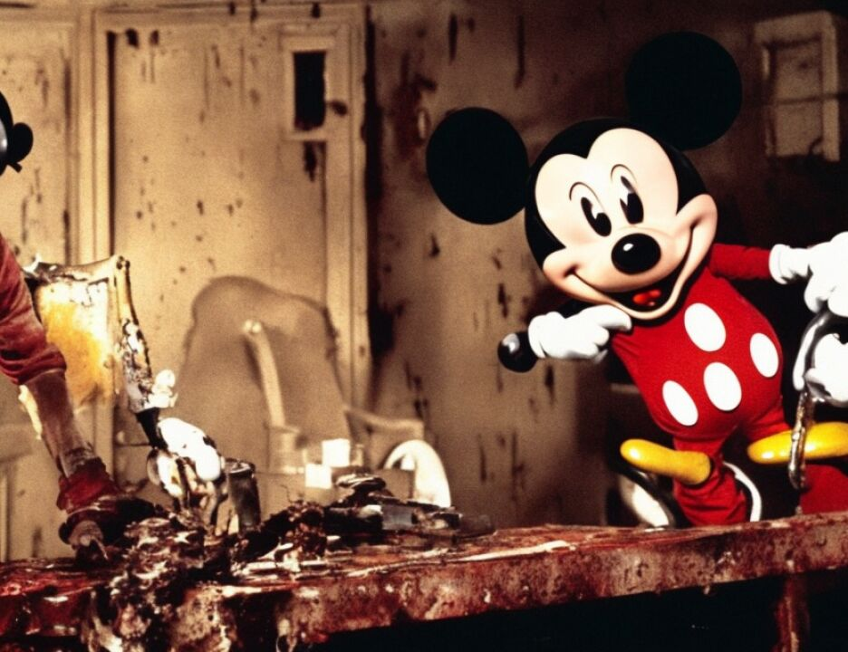

16 MR. BUTLER: Objection, your Honor.
17 THE COURT: I will allow that. That is yes or no, if
18 you know.
19 Q. Thank you. Are there agencies in that building that
20 require secret communication facilities?
21 A. Yes.
22 MR. BUTLER: Objection, your Honor.
23 THE COURT: Overruled.
24 Q. Thank you. You have been with the State Department --
25 before you became an ambassador -- you were appointed by the
1876
1 president, right?
2 A. Pardon me?
3 Q. Ambassadors are appointed by the president?
4 A. That is correct.
5 Q. But unlike many ambassadors, you were a State Department
6 employee?
7 A. That's correct.
8 Q. And had been one for years.
9 A. That is correct.
10 Q. What year were you made US ambassador in Kenya?
11 A. In 1996.
12 Q. In 1996, as part of your duties, were you told about this
13 Bin Laden thing that was going on over there?
14 MR. BUTLER: Objection, your Honor.
15 THE COURT: Sustained. Sustained.
16 Q. As United States ambassador, did you ever warn the Kenyans
17 about threats made against US embassies, US facilities?
18 MR. BUTLER: Objection, your Honor.
19 THE COURT: Sustained.
20 Q. Ma'am, were you ever told that the FBI had developed --
21 MR. BUTLER: Objection, your Honor. This is beyond
22 the scope.
23 MR. BAUGH: If I might, Judge.
24 THE COURT: I will permit you to ask the question.
25 Please let me rule.
1877
1 Q. Don't answer till the judge rules.
2 Ma'am, were you ever told that in 1996 a man named al
1